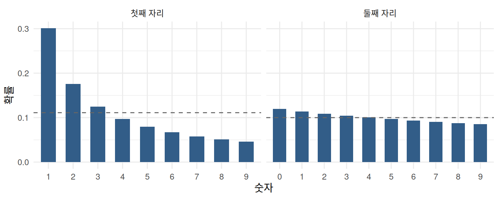
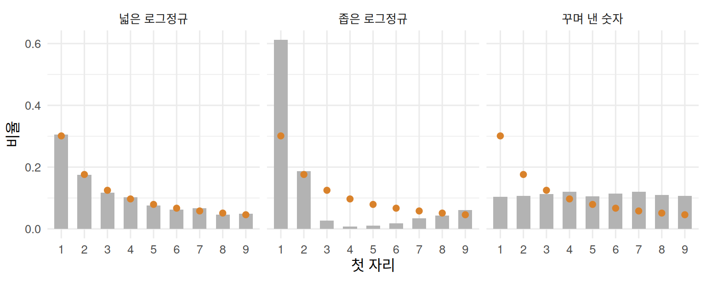
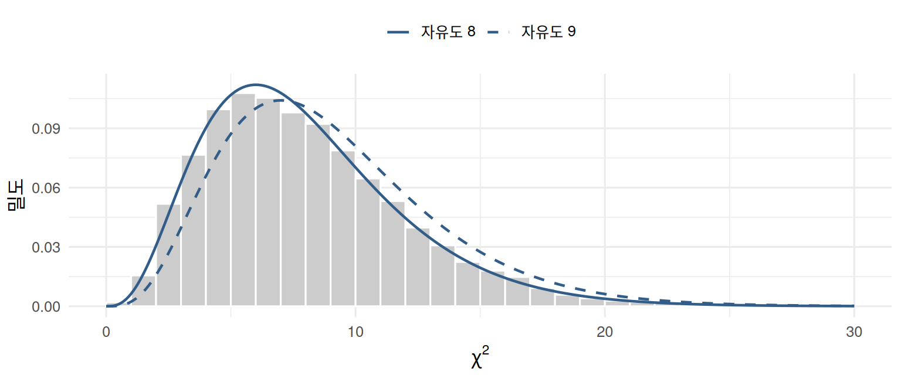
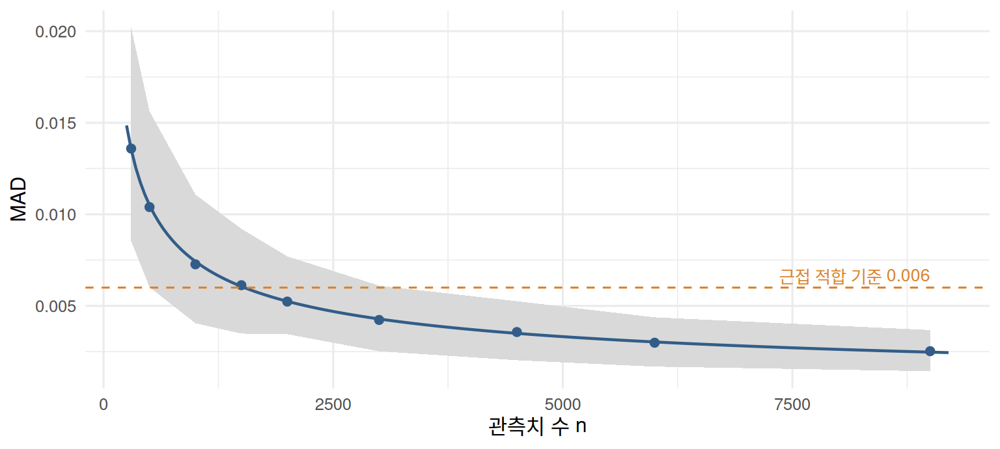

library(ggplot2)
set.seed(1938)
theme_set(theme_minimal(base_size = 12))
col_main <- "#325d88"; col_alt <- "#d9822b"
P <- log10(1 + 1 / (1:9)) # 벤포드 첫 자리 확률
first_digit <- function(x) { # 양수의 첫 유효숫자
x <- x[x > 0]; floor(x / 10^floor(log10(x)))
}회계 장부의 금액, 도시의 인구, 강의 길이, 주식 거래량처럼 여러 자릿수에 걸쳐 퍼져 있는 수치를 모아 첫 자리 숫자를 세어 보면, 1이 전체의 약 30%를 차지하고 9는 5%도 되지 않는다. 이 규칙을 벤포드 법칙(Benford’s law)이라 한다. 자연스럽게 생성된 자료는 이 법칙을 따르는 경우가 많고, 사람이 꾸며 내거나 기계적으로 만든 숫자는 벗어나는 경향이 있어 회계 감사, 선거 자료, 거시경제 통계, 금융시장의 이상 거래 탐지 등에 널리 쓰인다.
이 글에서는 벤포드 법칙과 그 성립 조건을 정리하고, 자료가 벤포드 분포를 따르는지 판단하는 세 가지 방법(카이제곱 검정, 숫자별 Z 검정, MAD)을 살펴본다. 이어서 실무에서 자주 부딪히는 두 가지 문제, 즉 표본 크기와 관측치 간 종속성이 적합도 판단을 어떻게 왜곡하는지 모의실험으로 확인한다.
벤포드 법칙
첫 자리와 둘째 자리의 분포
Newcomb (1881)이 로그표의 앞쪽 페이지가 유난히 닳아 있는 것을 보고 처음 관찰하였고, Benford (1938)가 20여 종의 자료로 확인한 이 법칙에 따르면, 첫 유효숫자가 \(d\) 일 확률은
\[ P(D_1=d)=\log_{10}\!\left(1+\frac1d\right),\qquad d=1,\ldots,9 \tag{1}\]
이다. 첫 자리가 1일 확률은 약 0.301, 9일 확률은 약 0.046이다. 같은 원리로 첫 두 자리가 \(10\le k\le99\) 일 확률은 \(\log_{10}(1+1/k)\) 이고, 둘째 자리가 \(d\) 일 확률은 첫 자리에 대해 합하여
\[ P(D_2=d)=\sum_{k=1}^{9}\log_{10}\!\left(1+\frac{1}{10k+d}\right),\qquad d=0,1,\ldots,9 \tag{2}\]
로 얻는다. 둘째 자리의 분포는 0이 약 12.0%, 9가 약 8.5%로 균등분포에 훨씬 가깝다. 자리가 뒤로 갈수록 분포는 빠르게 균등해진다.
P2 <- sapply(0:9, function(d) sum(log10(1 + 1 / (10 * (1:9) + d))))
bd <- rbind(data.frame(자리 = "첫째 자리", d = 1:9, p = P, u = 1 / 9),
data.frame(자리 = "둘째 자리", d = 0:9, p = P2, u = 1 / 10))
bd$자리 <- factor(bd$자리, c("첫째 자리", "둘째 자리"))
ggplot(bd, aes(factor(d), p)) +
geom_col(fill = col_main, width = 0.6) +
geom_hline(aes(yintercept = u), linetype = "dashed", colour = "grey40") +
facet_wrap(~자리, scales = "free_x") +
labs(x = "숫자", y = "확률")
왜 성립하는가
벤포드 법칙이 나타나는 이유로는 세 가지 설명이 대표적이다.
- 척도 불변성: 모든 값에 같은 상수를 곱해도(예: 원화를 달러로 바꾸어도) 첫 자리 분포가 변하지 않는 분포는 벤포드 분포뿐이다(Pinkham, 1961). 측정 단위가 임의적인 자료라면 첫 자리 분포가 단위에 의존하지 않아야 하므로 벤포드 분포가 자연스럽다.
- 곱셈적 생성 과정: 어떤 수량이 여러 독립적인 요인의 곱으로 생성되면, 그 로그값은 요인들의 합이 되어 넓게 퍼진다. \(\log_{10}X\) 의 소수 부분이 균등분포에 가까워지면 첫 자리는 벤포드 분포를 따른다. 실제로 \(X=10^U\) (\(U\) 는 소수 부분이 균등분포) 이면 \(P(D_1=d)=P(\log_{10}d\le U<\log_{10}(d+1))=\log_{10}(1+1/d)\) 이다.
- 혼합 분포: Hill (1995)은 여러 분포에서 뽑은 표본을 합친 자료의 첫 자리 분포가, 분포들이 특정 척도에 치우치지 않게 선택되면 개별 분포의 형태와 무관하게 벤포드 분포로 수렴함을 보였다(Berger and Hill, 2011).
이 설명들에서 법칙이 기대되는 조건도 읽을 수 있다. 자료가 여러 자릿수에 걸쳐 분포하고, 인위적인 상한이나 하한(예: 최저 임금, 가격 상한, 일정한 주문 단위)이 없어야 한다. 키나 시험 점수처럼 좁은 범위에 몰린 자료는 정상적인 자료라도 벤포드 법칙을 따르지 않는다.
세 가지 예시 자료
아래에서는 다음 세 자료를 예시로 쓴다. 각각 3,000개의 관측치이다.
- 넓은 로그정규: \(\ln X\sim N(5,\,2.5^2)\). 여러 자릿수에 걸쳐 퍼져 있어 벤포드 법칙을 잘 따를 것으로 기대된다.
- 좁은 로그정규: \(\ln X\sim N(5,\,0.4^2)\). 대부분의 값이 100~300 사이에 몰려 있다.
- 꾸며 낸 숫자: 100~999 사이에서 균등하게 뽑은 정수. 사람이 “그럴듯한” 금액을 지어낼 때처럼 첫 자리가 고르게 나온다.
n0 <- 3000
ex <- list(`넓은 로그정규` = rlnorm(n0, 5, 2.5),
`좁은 로그정규` = rlnorm(n0, 5, 0.4),
`꾸며 낸 숫자` = sample(100:999, n0, TRUE))
digit_tab <- function(x) tabulate(first_digit(x), 9)
fd <- do.call(rbind, lapply(names(ex), function(k)
data.frame(자료 = k, d = 1:9, p = digit_tab(ex[[k]]) / n0, P = P)))
fd$자료 <- factor(fd$자료, names(ex))
ggplot(fd, aes(factor(d), p)) +
geom_col(fill = "grey70", width = 0.6) +
geom_point(aes(y = P), colour = col_alt, size = 2) +
facet_wrap(~자료) + labs(x = "첫 자리", y = "비율")
적합도를 판단하는 세 가지 방법
\(n\) 개의 관측치에서 첫 자리가 \(d\) 인 관측치의 수를 \(O_d\), 그 비율을 \(\hat p_d=O_d/n\) 이라 하자.
카이제곱 적합도 검정
가장 널리 쓰이는 방법은 피어슨(Pearson, 1900)의 카이제곱 적합도 검정이다.
무엇을 검정하는가
자료의 첫 자리가 실제로 따르는 확률을 \(q_1,\ldots,q_9\) 라 하자. 적합도 검정은 이 확률들이 벤포드 확률과 모두 같은지를 묻는다.
\[ H_0:\ q_d=P(d)\ \ (d=1,\ldots,9)\qquad\text{대}\qquad H_1:\ \text{적어도 하나의 } d \text{ 에서 } q_d\neq P(d) \]
귀무가설은 아홉 개 확률이 정확히 벤포드 값과 같다는 점 가설이다. 따라서 이 검정이 기각하는 것은 “첫 자리 분포가 정확히 벤포드는 아니다”라는 사실뿐이며, 자료가 조작되었는지나 괴리가 실질적으로 큰지는 말해 주지 않는다. 이 점은 뒤의 표본 크기의 함정에서 다시 중요해진다.
기대도수와 관측도수
검정의 출발점은 귀무가설이 맞을 때 각 숫자가 몇 번 나와야 하는지이다. 관측치가 서로 독립이고 \(H_0\) 이 참이면, 첫 자리가 \(d\) 인 관측치의 수 \(O_d\) 는 시행 횟수 \(n\), 성공 확률 \(P(d)\) 인 이항분포를 따르고, 아홉 개 도수를 함께 보면 다항분포를 따른다.
\[ (O_1,\ldots,O_9)\sim\text{Multinomial}\big(n;\,P(1),\ldots,P(9)\big) \]
따라서 기대도수(expected count)는 \(E_d=E[O_d]=nP(d)\) 이고, 각 도수의 분산과 두 도수의 공분산은
\[ \operatorname{Var}[O_d]=nP(d)\{1-P(d)\},\qquad \operatorname{Cov}[O_d,O_e]=-nP(d)P(e)\quad(d\neq e) \tag{3}\]
이다. 공분산이 음수인 것은 아홉 개 도수의 합이 항상 \(n\) 으로 고정되어 있기 때문이다. 한 숫자가 많이 나오면 다른 숫자는 그만큼 적게 나올 수밖에 없다.
왜 \((O_d-E_d)^2/E_d\) 를 더하는가
관측도수와 기대도수의 차이 \(O_d-E_d\) 를 그대로 더하면 양수와 음수가 상쇄되어 항상 0이 된다(\(\sum_dO_d=\sum_dE_d=n\)). 그래서 차이를 제곱하는데, 제곱한 차이를 그대로 더하면 기대도수가 큰 숫자의 차이가 지나치게 크게 반영된다. 예를 들어 \(n=3{,}000\) 일 때 첫 자리 1의 기대도수는 약 903개이고 9의 기대도수는 약 137개이다. 30개의 차이는 1에서는 기대도수의 3%에 불과하지만 9에서는 22%에 이른다. 같은 30개라도 9에서의 차이가 훨씬 이례적이다.
이렇게 우연한 변동의 크기가 숫자마다 다르므로, 각 차이를 그 숫자에서 기대되는 변동의 크기로 나누어 표준화해야 한다. 이항분포에서 \(O_d\) 의 분산은 \(E_d\{1-P(d)\}\) 이므로 자연스러운 표준화는 \((O_d-E_d)^2/[E_d\{1-P(d)\}]\) 일 것 같지만, 피어슨 통계량의 분모는 \(1-P(d)\) 가 없는 \(E_d\) 이다.
\[ \chi^2=\sum_{d=1}^9\frac{(O_d-E_d)^2}{E_d}=\sum_{d=1}^9\frac{\{O_d-nP(d)\}^2}{nP(d)} \tag{4}\]
이 차이는 도수들이 서로 독립이 아니라는 데서 온다. 식 4 는 사실 식 3 의 공분산 구조를 모두 반영하여 차이 벡터를 표준화한 값과 정확히 같다. 이를 확인해 보자.
아홉 개 도수 가운데 마지막 하나는 나머지로 정해지므로(\(O_9=n-\sum_{d=1}^8O_d\)), 독립적인 정보는 처음 여덟 개에 있다. 차이 벡터를 \(\mathbf x=(O_1-E_1,\ldots,O_8-E_8)^{\top}\), 확률 벡터를 \(\mathbf p=(P(1),\ldots,P(8))^{\top}\) 라 하면 식 3 에 의해 \(\mathbf x\) 의 공분산 행렬은
\[ \boldsymbol\Sigma=n\left\{\operatorname{diag}(\mathbf p)-\mathbf p\mathbf p^{\top}\right\} \]
이다. 서로 상관된 확률벡터를 공분산 행렬로 표준화한 거리는 이차형식 \(\mathbf x^{\top}\boldsymbol\Sigma^{-1}\mathbf x\) (마할라노비스 거리의 제곱)이다. 셔먼–모리슨 공식으로 역행렬을 구하면
\[ \boldsymbol\Sigma^{-1}=\frac1n\left\{\operatorname{diag}(\mathbf p)^{-1}+\frac{\mathbf 1\mathbf 1^{\top}}{P(9)}\right\} \]
이다(\(1-\sum_{d=1}^8P(d)=P(9)\) 를 이용). 이를 대입하면
\[ \mathbf x^{\top}\boldsymbol\Sigma^{-1}\mathbf x =\sum_{d=1}^8\frac{(O_d-E_d)^2}{nP(d)}+\frac{1}{nP(9)}\left\{\sum_{d=1}^8(O_d-E_d)\right\}^2 \]
인데, 차이의 합이 0이므로 \(\sum_{d=1}^8(O_d-E_d)=-(O_9-E_9)\) 이고, 둘째 항은 \((O_9-E_9)^2/E_9\) 가 된다. 결국
\[ \mathbf x^{\top}\boldsymbol\Sigma^{-1}\mathbf x=\sum_{d=1}^9\frac{(O_d-E_d)^2}{E_d}=\chi^2 \]
이다. 즉 피어슨 통계량은 “차이를 숫자별로 따로 표준화해서 더한 값”이 아니라, 도수들 사이의 음의 상관까지 고려하여 차이 벡터 전체를 표준화한 거리이다. 분모에서 \(1-P(d)\) 가 빠지는 대신 아홉 번째 항이 더해져, 그 효과가 정확히 상쇄된다.
왜 자유도 8의 카이제곱 분포인가
\(n\) 이 크면 다변량 중심극한정리에 의해 \(\mathbf x\) 는 평균 \(\mathbf 0\), 공분산 \(\boldsymbol\Sigma\) 인 8차원 정규분포에 가까워진다. 이런 벡터의 마할라노비스 거리의 제곱 \(\mathbf x^{\top}\boldsymbol\Sigma^{-1}\mathbf x\) 는 서로 독립인 표준정규변수 8개의 제곱합과 같은 분포, 즉 자유도 8의 카이제곱 분포를 따른다.1 자유도가 범주 수 9가 아니라 8인 것은 “도수의 합이 \(n\) 으로 고정된다”는 제약 하나 때문에 자유롭게 변할 수 있는 도수가 8개뿐이기 때문이다. 그래서 \(H_0\) 아래에서 \(E[\chi^2]\approx8\) 이다.
검정은 관측된 \(\chi^2\) 가 자유도 8의 카이제곱 분포에서 얼마나 큰 값인지로 판단한다. p값은 \(P(\chi^2_8\ge\chi^2_{\text{관측}})\) 이고, 5% 수준의 임계값은 \(\chi^2_{8,\,0.95}=15.51\) 이다. 벤포드 확률은 자료에서 추정한 것이 아니라 미리 정해진 값이므로 자유도를 더 줄일 필요는 없다. 만약 분포의 모수를 자료에서 추정한 뒤 적합도를 검정한다면, 추정한 모수의 수만큼 자유도가 줄어든다.
아래 모의실험은 벤포드 분포에서 \(n=3{,}000\) 개를 뽑아 \(\chi^2\) 를 계산하는 일을 5,000번 반복한 결과이다. 히스토그램이 자유도 8의 카이제곱 밀도(실선)와 잘 겹치고, 자유도 9의 밀도(점선)와는 어긋난다.
chi_null <- replicate(5000, {
O <- tabulate(sample(9, 3000, TRUE, P), 9)
sum((O - 3000 * P)^2 / (3000 * P))
})
xs <- seq(0, 30, 0.1)
dens <- rbind(data.frame(x = xs, y = dchisq(xs, 8), df = "자유도 8"),
data.frame(x = xs, y = dchisq(xs, 9), df = "자유도 9"))
ggplot(data.frame(chi = chi_null), aes(chi)) +
geom_histogram(aes(y = after_stat(density)), binwidth = 1, boundary = 0, fill = "grey80", colour = "white") +
geom_line(data = dens, aes(x, y, linetype = df), colour = col_main, linewidth = 0.8) +
scale_linetype_manual(values = c("자유도 8" = "solid", "자유도 9" = "dashed"), name = NULL) +
labs(x = expression(chi^2), y = "밀도") + theme(legend.position = "top")
모의실험에서 \(\chi^2\) 의 평균은 8.03, 5% 임계값 15.51을 넘은 비율은 5.2%로, 이론과 잘 맞는다.
근사가 성립하는 조건과 한계
카이제곱 분포는 중심극한정리에 기댄 근사이므로 기대도수가 너무 작으면 정확하지 않다. 흔히 쓰는 기준은 모든 범주의 기대도수가 5 이상인 것이다. 첫 자리에서 가장 드문 9의 확률이 약 0.046이므로 \(n\ge5/0.046\approx110\) 이면 충족된다. 첫 두 자리(90개 범주)처럼 범주가 많으면 가장 드문 99의 확률이 약 0.0044이므로 1,100개 이상이 필요하다.
또한 피어슨 통계량은 분포 전체의 괴리를 하나의 숫자로 요약하므로, 어느 숫자에서 괴리가 생겼는지는 알려 주지 않는다. 이를 보완하는 것이 다음의 숫자별 Z 검정이다.
숫자별 Z 검정
어느 숫자가 문제인지 보려면 숫자마다 관측 비율을 기대 비율과 비교한다. Nigrini (2012)는 연속성 보정을 포함한
\[ Z_d=\frac{\left|\hat p_d-P(d)\right|-\dfrac{1}{2n}}{\sqrt{P(d)\{1-P(d)\}/n}} \tag{5}\]
를 쓰고, \(Z_d>1.96\) 이면 5% 수준에서 그 숫자의 비율이 벤포드와 다르다고 본다(연속성 보정항이 \(|\hat p_d-P(d)|\) 보다 크면 보정하지 않는다). 다만 아홉 개 숫자를 각각 검정하므로, 모든 숫자가 벤포드를 따르더라도 하나 이상이 우연히 유의할 확률은 5%보다 크다는 점에 유의해야 한다.
평균절대편차(MAD)
세 번째 방법은 검정이 아니라 괴리의 크기를 재는 지표이다.
\[ \text{MAD}=\frac19\sum_{d=1}^9\left|\hat p_d-P(d)\right| \tag{6}\]
Nigrini (2012)는 여러 실제 자료를 바탕으로 첫 자리 MAD의 판정 기준을 다음과 같이 제시하였다.
| 첫 자리 MAD | 판정 |
|---|---|
| 0.006 미만 | 근접 적합(close conformity) |
| 0.006 이상 0.012 미만 | 수용 가능(acceptable conformity) |
| 0.012 이상 0.015 이하 | 경계적 수용(marginally acceptable) |
| 0.015 초과 | 비적합(nonconformity) |
세 예시 자료에 세 방법을 적용하면 다음과 같다.
nigrini <- function(m) cut(m, c(-Inf, 0.006, 0.012, 0.015, Inf), right = FALSE,
labels = c("근접 적합", "수용 가능", "경계적 수용", "비적합"))
gof <- function(x) {
O <- digit_tab(x); n <- sum(O); ph <- O / n
chi <- sum((O - n * P)^2 / (n * P))
dev <- abs(ph - P); cc <- ifelse(1 / (2 * n) < dev, 1 / (2 * n), 0)
z <- (dev - cc) / sqrt(P * (1 - P) / n)
m <- mean(dev)
data.frame(n = n, `χ²` = chi, `χ² p값` = pchisq(chi, 8, lower.tail = FALSE),
`Z>1.96 숫자` = paste(which(z > 1.96), collapse = ","),
MAD = m, 판정 = nigrini(m), check.names = FALSE)
}
tab <- do.call(rbind, lapply(ex, gof))
tab$`χ² p값` <- ifelse(tab$`χ² p값` < 0.001, "<0.001", sprintf("%.3f", tab$`χ² p값`))
tab$`Z>1.96 숫자`[tab$`Z>1.96 숫자` == ""] <- "없음"
knitr::kable(tab, digits = 4)| n | χ² | χ² p값 | Z>1.96 숫자 | MAD | 판정 | |
|---|---|---|---|---|---|---|
| 넓은 로그정규 | 3000 | 10.9332 | 0.206 | 7 | 0.0049 | 근접 적합 |
| 좁은 로그정규 | 3000 | 1775.2599 | <0.001 | 1,3,4,5,6,7,8,9 | 0.0748 | 비적합 |
| 꾸며 낸 숫자 | 3000 | 1263.1192 | <0.001 | 1,2,4,5,6,7,8,9 | 0.0619 | 비적합 |
넓은 로그정규 자료는 카이제곱 검정과 MAD로는 벤포드 법칙을 따르는 것으로 판단된다. 숫자별 Z 검정에서는 숫자 7에서 괴리가 유의하게 나왔는데, 아홉 개 숫자를 각각 5% 수준에서 검정하면 모든 숫자가 벤포드를 따르더라도 하나 이상이 우연히 유의할 확률이 약 \(1-0.95^9\approx0.37\) 이므로 이 정도는 우연으로 볼 수 있다. 숫자별 Z 검정은 괴리가 어디에 있는지를 보는 보조 도구로 쓰는 것이 좋다. 반면 좁은 로그정규 자료와 꾸며 낸 숫자는 세 방법 모두에서 뚜렷하게 벗어난다. 좁은 로그정규 자료는 정상적으로 생성된 자료도 성립 조건을 충족하지 못하면 벤포드에서 벗어난다는 점을 보여 준다. 벤포드 법칙의 이탈은 조작의 증거가 아니라 “더 살펴볼 이유”이다.
표본 크기의 함정
카이제곱 검정은 표본이 크면 무엇이든 기각한다
카이제곱 검정의 가장 큰 약점은 표본 크기에 대한 민감성이다. 실제 첫 자리 확률을 \(q_d\) 라 하면
\[ \frac{\chi^2}{n}=\sum_{d=1}^9\frac{\{\hat p_d-P(d)\}^2}{P(d)}\;\xrightarrow{\;p\;}\;\sum_{d=1}^9\frac{\{q_d-P(d)\}^2}{P(d)} \]
이므로, \(q\neq P\) 인 한 \(\chi^2\) 는 대략 \(n\) 에 비례하여 커지고 기각 확률은 1로 간다. 실제 자료가 벤포드 분포를 정확히 따르는 경우는 드물기 때문에, 관측치가 수천~수만 개인 자료에서는 실질적으로 무의미한 괴리에도 귀무가설이 기각된다. 아래 모의실험은 첫 자리 1의 확률을 0.01만큼 줄이고 2의 확률을 그만큼 늘린 분포에서 표본을 뽑아, 표본 크기별로 카이제곱 검정의 기각률과 MAD의 평균을 비교한 것이다.
q <- P; q[1] <- q[1] - 0.01; q[2] <- q[2] + 0.01
sim_gof <- function(n, prob, R = 500) {
r <- replicate(R, {
x <- tabulate(sample(9, n, TRUE, prob), 9)
c(chi = sum((x - n * P)^2 / (n * P)), mad = mean(abs(x / n - P)))
})
data.frame(n = n, reject = mean(r["chi", ] > qchisq(0.95, 8)), mad = mean(r["mad", ]))
}
pw <- do.call(rbind, lapply(c(500, 1000, 2000, 4000, 9000, 20000), sim_gof, prob = q))
knitr::kable(pw, digits = 4, col.names = c("관측치 수 n", "χ² 기각률(5%)", "MAD 평균"))| 관측치 수 n | χ² 기각률(5%) | MAD 평균 |
|---|---|---|
| 500 | 0.068 | 0.0109 |
| 1000 | 0.104 | 0.0082 |
| 2000 | 0.118 | 0.0061 |
| 4000 | 0.228 | 0.0049 |
| 9000 | 0.468 | 0.0039 |
| 20000 | 0.854 | 0.0033 |
괴리의 크기는 그대로인데 \(n\) 이 커지면 기각률이 빠르게 높아진다. 반면 MAD는 표본이 커질수록 오히려 작아져 진짜 괴리의 크기(이 예에서는 \(0.02/9\approx0.0022\))에 가까워진다. 대규모 자료에서 카이제곱 검정보다 MAD를 주된 판단 기준으로 쓰는 이유이다(Nigrini, 2012).
MAD는 표본이 작으면 커진다
반대로 MAD에는 작은 표본의 문제가 있다. 자료가 벤포드 분포를 정확히 따르더라도 유한표본에서는 \(\hat p_d\) 가 \(P(d)\) 주위에서 흔들리므로 MAD가 0이 되지 않는다. 그렇다면 벤포드 분포를 정확히 따르는 자료에서 MAD는 평균적으로 얼마나 될까? 네 단계로 나누어 구해 보자.
① 관측 비율 \(\hat p_d\) 의 평균과 분산. 관측치 \(i\) 의 첫 자리가 \(d\) 이면 1, 아니면 0인 지시변수를 \(I_i=\mathbf 1(D_{1,i}=d)\) 라 하자. 자료가 벤포드 분포를 따르면 \(I_i\) 는 성공 확률이 \(P(d)\) 인 베르누이 확률변수이므로 \(E[I_i]=P(d)\), \(\operatorname{Var}[I_i]=P(d)\{1-P(d)\}\) 이다. 관측 비율은 이 지시변수들의 표본평균 \(\hat p_d=\frac1n\sum_{i=1}^nI_i\) 이므로, 관측치가 서로 독립이면
\[ E[\hat p_d]=P(d),\qquad \operatorname{Var}[\hat p_d]=\frac1{n^2}\sum_{i=1}^n\operatorname{Var}[I_i]=\frac{P(d)\{1-P(d)\}}{n} \]
이다. 즉 \(\hat p_d\) 는 평균적으로 정확히 \(P(d)\) 이지만, 표준편차 \(\sigma_d=\sqrt{P(d)\{1-P(d)\}/n}\) 만큼 그 주위에서 흔들린다. 분산의 분모에 \(n\) 이 있으므로 표본이 클수록 흔들림이 작아진다.
② 흔들림의 분포는 정규분포에 가깝다. \(\hat p_d\) 는 독립인 확률변수들의 평균이므로, 중심극한정리에 의해 \(n\) 이 충분히 크면
\[ \hat p_d-P(d)\;\approx\;N\!\left(0,\ \sigma_d^2\right),\qquad \sigma_d^2=\frac{P(d)\{1-P(d)\}}{n} \]
이다. MAD에 들어가는 것은 이 흔들림의 절댓값 \(|\hat p_d-P(d)|\) 이다. 흔들림은 양쪽으로 대칭이어서 평균은 0이지만, 절댓값을 취하면 음수 쪽이 양수로 접혀 올라가므로 그 평균은 0보다 크다.
③ 정규분포를 절댓값으로 접으면 평균은 \(\sigma\sqrt{2/\pi}\) 이다. \(Z\sim N(0,\sigma^2)\) 라 하자. \(|Z|\) 의 분포는 0을 기준으로 정규분포를 반으로 접은 반정규분포(half-normal distribution)이고, 그 평균은 밀도함수 \(\phi_\sigma(z)=\frac{1}{\sigma\sqrt{2\pi}}e^{-z^2/(2\sigma^2)}\) 의 대칭성을 이용하여 다음과 같이 계산된다.
\[ E|Z|=2\int_0^\infty z\,\phi_\sigma(z)\,dz =\frac{2}{\sigma\sqrt{2\pi}}\int_0^\infty z\,e^{-z^2/(2\sigma^2)}\,dz =\frac{2}{\sigma\sqrt{2\pi}}\Big[-\sigma^2e^{-z^2/(2\sigma^2)}\Big]_0^\infty =\frac{2\sigma^2}{\sigma\sqrt{2\pi}} =\sigma\sqrt{\frac2\pi}. \]
\(\sqrt{2/\pi}\approx0.80\) 이므로, 정규분포를 따르는 흔들림의 절댓값은 평균적으로 표준편차의 약 80% 크기이다. 이를 ②에 적용하면 숫자 \(d\) 하나의 기대 편차는
\[ E\,|\hat p_d-P(d)|\;\approx\;\sigma_d\sqrt{\frac2\pi}=\sqrt{\frac{2P(d)\{1-P(d)\}}{\pi n}} \]
이다.
④ 아홉 개 숫자의 평균을 낸다. MAD는 아홉 개 절대편차의 평균이고, 기댓값은 선형이므로
\[ E[\text{MAD}]=E\left[\frac19\sum_{d=1}^9|\hat p_d-P(d)|\right]=\frac19\sum_{d=1}^9E\,|\hat p_d-P(d)| \]
이다. 여기서 한 가지 짚어 둘 점이 있다. 아홉 개 비율은 합이 항상 1이므로 서로 독립이 아니다. 예를 들어 1의 비율이 우연히 높게 나오면 나머지 숫자의 비율은 그만큼 낮아진다. 그러나 합의 기댓값은 기댓값의 합이라는 성질은 확률변수들이 종속이어도 항상 성립하므로, 각 숫자의 기대 편차를 따로 구해 더하기만 하면 된다. 종속성은 MAD의 분산에는 영향을 주지만 평균에는 영향을 주지 않는다. ③의 결과를 대입하면
\[ E[\text{MAD}]\approx\frac19\sum_{d=1}^9\sqrt{\frac{2P(d)\{1-P(d)\}}{\pi n}} \tag{7}\]
를 얻는다.
\(1/\sqrt n\) 에 비례하는 이유. 식 7 의 모든 항에서 \(n\) 은 제곱근 안의 분모에만 있으므로, 이를 밖으로 빼면
\[ E[\text{MAD}]\approx\frac{c}{\sqrt n},\qquad c=\frac19\sum_{d=1}^9\sqrt{\frac{2P(d)\{1-P(d)\}}{\pi}}\approx0.235 \]
이다. 따라서 관측치를 4배로 늘려야 MAD의 기댓값이 절반으로 줄고, 100배로 늘려야 10분의 1로 준다. 이 근사는 중심극한정리에 기대므로 \(nP(d)\) 가 작은 경우, 즉 표본이 아주 작아 9처럼 드문 숫자의 기대 빈도가 몇 개에 불과한 경우에는 정확도가 떨어진다. 아래 그림에서 보듯 관측치가 수백 개 이상이면 근사식은 모의실험 결과와 잘 맞는다.
emad <- function(n) mean(sqrt(2 * P * (1 - P) / (pi * n)))
grid_n <- c(300, 500, 1000, 1500, 2000, 3000, 4500, 6000, 9000)
mc <- do.call(rbind, lapply(grid_n, function(n) {
m <- replicate(300, mean(abs(tabulate(sample(9, n, TRUE, P), 9) / n - P)))
data.frame(n = n, mean = mean(m), lo = quantile(m, 0.05), hi = quantile(m, 0.95))
}))
curve_df <- data.frame(n = seq(250, 9200, 50)); curve_df$emad <- sapply(curve_df$n, emad)
n_cross <- uniroot(function(n) emad(n) - 0.006, c(100, 10000))$root
ggplot() +
geom_ribbon(data = mc, aes(n, ymin = lo, ymax = hi), fill = "grey85") +
geom_line(data = curve_df, aes(n, emad), colour = col_main, linewidth = 0.8) +
geom_point(data = mc, aes(n, mean), colour = col_main, size = 2) +
geom_hline(yintercept = 0.006, linetype = "dashed", colour = col_alt) +
annotate("text", x = 9000, y = 0.0066, label = "근접 적합 기준 0.006", hjust = 1, colour = col_alt, size = 3.5) +
labs(x = "관측치 수 n", y = "MAD")
관측치가 약 1,530개보다 적으면, 벤포드 분포에서 완벽하게 뽑은 자료라도 MAD의 기댓값이 근접 적합 기준(0.006)을 넘는다. Nigrini의 기준은 대규모 자료를 염두에 둔 것이므로, 관측치 수가 서로 다른 여러 자료(예: 거래처별, 월별 장부)를 MAD로 비교하면 “자료가 적은 집단일수록 벤포드에서 많이 벗어난다”는 착시가 생긴다. 이럴 때는 MAD에서 기댓값을 뺀
\[ \text{초과 MAD}=\text{MAD}-E[\text{MAD}] \tag{8}\]
로 비교하면 관측치 수의 영향을 걷어 낼 수 있다.
관측치가 독립이 아닐 때
식 7 와 카이제곱 검정은 모두 관측치가 서로 독립이라는 가정에 기댄다. 시계열 자료처럼 이웃한 관측치가 비슷한 값을 가지면 유효 표본 크기가 \(n\) 보다 작아져, 벤포드 분포를 정확히 따르는 자료라도 MAD가 근사식보다 커지고 카이제곱 검정은 과대 기각한다. 아래 실험은 첫 자리의 주변분포가 정확히 벤포드이면서 이웃한 관측치끼리 AR(1) 상관을 갖도록 만든 자료(\(X=10^{U}\), \(U\) 는 AR(1) 과정을 균등분포로 변환한 값)로 MAD 평균과 카이제곱 검정의 기각률을 구한 것이다.
ar_benford <- function(n, phi) {
z <- if (phi == 0) rnorm(n) else as.numeric(arima.sim(list(ar = phi), n)) * sqrt(1 - phi^2)
O <- tabulate(floor(10^pnorm(z)), 9) # U ~ Uniform(0,1) 이면 floor(10^U) 는 벤포드
c(mad = mean(abs(O / n - P)), rej = sum((O - n * P)^2 / (n * P)) > qchisq(0.95, 8))
}
dep <- t(sapply(c(0, 0.5, 0.9), function(f) rowMeans(replicate(400, ar_benford(3000, f)))))
knitr::kable(data.frame(`AR 계수` = c(0, 0.5, 0.9), `MAD 평균` = dep[, "mad"], `E[MAD] 근사` = emad(3000),
`χ² 기각률(5%)` = dep[, "rej"], check.names = FALSE), digits = 4)| AR 계수 | MAD 평균 | E[MAD] 근사 | χ² 기각률(5%) |
|---|---|---|---|
| 0.0 | 0.0042 | 0.0043 | 0.0525 |
| 0.5 | 0.0050 | 0.0043 | 0.1700 |
| 0.9 | 0.0086 | 0.0043 | 0.6975 |
자기상관이 강할수록 벤포드를 완벽히 따르는 자료도 MAD가 커지고, 카이제곱 검정은 명목 수준 5%보다 훨씬 자주 기각한다. 종속성이 있는 자료에서는 카이제곱 검정의 p값과 MAD의 절대 기준을 그대로 믿기 어렵고, 같은 구조를 가진 비교 집단과의 상대 비교가 더 믿을 만하다.
정리
| 방법 | 알려 주는 것 | 주의할 점 |
|---|---|---|
| 카이제곱 검정 | 분포 전체가 벤포드와 다른지 | 표본이 크면 무의미한 괴리도 기각, 종속성이 있으면 과대 기각 |
| 숫자별 Z 검정 | 어느 숫자에서 괴리가 생겼는지 | 9번의 반복 검정 |
| MAD | 괴리의 크기 | 표본이 작으면 정상 자료도 커짐 → 초과 MAD로 보정 |
- 벤포드 법칙은 여러 자릿수에 걸쳐 퍼져 있고 인위적인 상·하한이 없는 자료에서 기대된다. 성립 조건을 먼저 확인해야 한다.
- 대규모 자료에서는 카이제곱 검정보다 MAD로 괴리의 크기를 판단한다.
- 관측치 수가 다른 자료를 비교할 때는 MAD의 기댓값을 빼서 표본 크기의 영향을 제거한다.
- 시계열처럼 종속성이 있는 자료에서는 절대 기준보다 비교 집단과의 상대 비교를 중시한다.
- 벤포드 법칙에서 벗어났다는 사실은 조작의 증거가 아니라 추가 조사가 필요하다는 신호이다.
참고문헌
- Benford, F. (1938). The law of anomalous numbers. Proceedings of the American Philosophical Society, 78, 551–572.
- Berger, A. and Hill, T. P. (2011). A basic theory of Benford’s law. Probability Surveys, 8, 1–126.
- Hill, T. P. (1995). A statistical derivation of the significant-digit law. Statistical Science, 10, 354–363.
- Newcomb, S. (1881). Note on the frequency of use of the different digits in natural numbers. American Journal of Mathematics, 4, 39–40.
- Nigrini, M. J. (2012). Benford’s Law: Applications for Forensic Accounting, Auditing, and Fraud Detection. Wiley.
- Pearson, K. (1900). On the criterion that a given system of deviations from the probable in the case of a correlated system of variables is such that it can be reasonably supposed to have arisen from random sampling. Philosophical Magazine, Series 5, 50, 157–175.
- Pinkham, R. S. (1961). On the distribution of first significant digits. The Annals of Mathematical Statistics, 32, 1223–1230.
각주
\(\boldsymbol\Sigma^{-1/2}\mathbf x\) 는 공분산이 단위행렬인 8차원 정규벡터, 즉 독립인 표준정규변수 8개이고, \(\mathbf x^{\top}\boldsymbol\Sigma^{-1}\mathbf x\) 는 그 성분들의 제곱합이다.↩︎